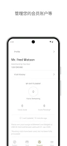
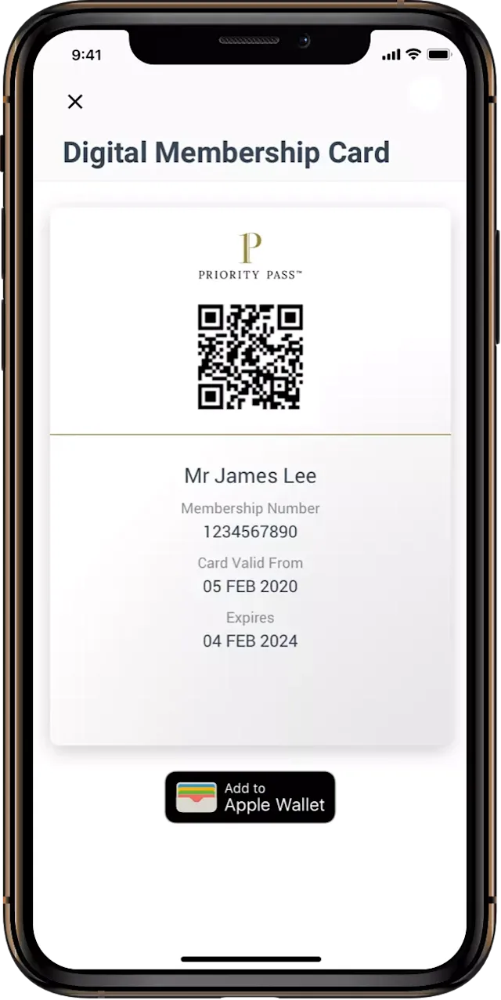
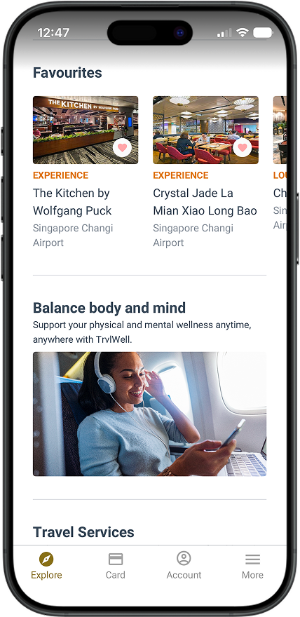

饿了三小时在里根机场转机，朋友甩给我一张 Priority Pass
从纽约飞旧金山被前序航班坑在 DCA，饿着肚子蹲候机厅的时候，邻座老飞友一句话让我吃到了一顿不花钱的正餐——那是我第一次见识 Priority Pass 不止能进贵宾室。
那顿 28 美元的免费午餐
去年三月的一个周三，我从纽约 JFK 飞旧金山 SFO，中途在华盛顿里根 DCA 转机。前序航班因为暴雨晚点了整整两个半小时，我落地 DCA 的时候已经是下午一点四十——早上七点在 JFK 啃的那个百吉饼早就消化得渣都不剩，胃里空得发慌。
下了飞机一路小跑冲到 D 航站楼的登机口，发现转机时间只剩一个半小时，而且最坑的是 D 楼的贵宾室——我刷了一下手里那张招行白金卡附赠的 Priority Pass 会籍，APP 直接告诉我这家贵宾室今天不接受银行附赠卡。
"巧了，你也被拒了？"旁边一个拎着 Rimowa 的老兄凑过来搭话，看我一脸蒙圈，他掏出手机点开 Priority Pass："别去贵宾室了，这家 D 楼 Bidwell 餐厅能抵扣，每人 28 刀。"
我以为他在开玩笑。机场餐厅抵扣？我之前一直以为 Priority Pass 就是个贵宾室通行证，进不去就等于废了。
"银行附赠的卡不行，你得自己买一张官方会籍，最便宜的 Standard 才 99 刀一年。"他快速划了几下屏幕，"来，我给你看怎么弄——"
那是我第一次意识到，Priority Pass 的玩法比我想象的多太多了。
贵宾室之外，还有一张"餐厅代金券"
之前我对 Priority Pass 的认知确实很狭隘：一张卡，扫一下进贵宾室，喝喝咖啡蹭蹭 Wi-Fi。但那个在 DCA 转机的下午让我明白，直接付费购买的会籍，远不止贵宾室门票这一个功能。
先说最让我震惊的餐厅抵扣——全球目前大约有 30 家机场参与这个项目，分布在北美和欧洲。会员在合作餐厅用餐，每人可以抵扣 28 到 30 美元，同行宾客也有同等额度。我后来专门下载了 Priority Pass APP 翻了翻，像丹佛 DEN 的 Timberline Grill、伦敦希思罗的好几家餐厅、纽约拉瓜迪亚 LGA 的合作商户，全都在列表里。
而且餐厅抵扣和进贵宾室用的是同一个访问次数配额。Standard 会籍本身没有免费访问次数，每次进贵宾室或者用餐厅抵扣都要从注册信用卡扣 27 美元；Standard Plus 包含 10 次免费访问，抵扣和贵宾室共享这 10 次；Prestige 是无限次，完全不用纠结。
这点其实挺重要的——银行附赠的会籍绝大多数不能用餐厅抵扣。我那张招行运通百夫长白金送的卡，进贵宾室没问题，但一到餐厅就不行了。那个 Rimowa 老兄告诉我，他就是因为餐厅抵扣才自己掏 99 刀买了 Standard 会籍："一年能用个四五次，每次抵扣 30 刀，轻松回本。"

那次转机的实战：15 分钟搞定一顿正餐
他当场给我演示了一遍，整个流程比我想象的简单得多：
打开从 Priority Pass下载 渠道拿到的 APP，搜索 DCA 机场，切换到"体验项目"筛选，找那个餐叉图标的餐厅，点进去就能看到抵扣金额。Bidwell 显示的是 US$28 per person。
到了餐厅之后，落座直接跟服务员说想用 Priority Pass 的 dining credit，对方秒懂，刷了一下我朋友的电子会员卡就开始点餐。
我点了一个 26 美元的鸡肉沙拉配薯条，他点了一个 24 美元的汉堡。账单来了之后，餐厅直接从会籍里扣了每人 28 刀的额度，剩下的零头和小费我们自己结的。不凑金额、不设最低消费，28 刀以内全免——这一点让我印象特别深，不像很多机场代金券那样非要逼你消费到某个门槛。

那次之后我自己也掏了 99 刀买了 Standard 会籍——注册流程确实省事，官网选档位、填拼音姓名和邮箱、绑一张 Visa 或 Mastercard，支付完立刻就能在 APP 里看到电子会员卡。实体卡会寄到家里，但电子卡激活了就能直接用，根本等不到实体卡。
买了之后才知道，有几个坑得提前注意
第一个坑就是银行附赠 vs 直接购买的权益差异。这点刚才说过，但值得再强调一遍：餐厅抵扣、水疗优惠、零售折扣、睡眠舱兑换，这些专属权益基本都只给直接付费的会员。如果你只有银行送的会籍，Priority Pass 对你来说就是纯贵宾室通行证。
第二个坑是电子卡故障。我买了卡之后第一次飞香港，电子卡扫了三次都没出来——APP 上显示会籍是活跃的，就是二维码扫不动。前台说这家贵宾室只接受实体卡，我当时差点慌了，好在兜里刚好带了实体卡。那次之后我每次出门都把实体卡揣护照夹里，电子卡只是备胎。
如果真遇到电子卡扫不出来的情况，我后来翻了 Priority Pass文档 才知道有一套排查步骤：先在 APP 里重新激活电子会员卡，不行就杀进程重开 APP，再不行就换个贵宾室试试（同机场通常不止一家接受 Priority Pass）。实在不行就让前台手动输入你的会籍编号查——编号在电子卡页面底部能看到。
第三个坑是访问次数共享。Standard Plus 的 10 次免费访问，进贵宾室算一次，用餐厅抵扣也算一次。我后来在 DEN 机场带老婆用餐厅抵扣，那次就占了两次免费额度，剩下的次数瞬间变成 8 次。
现在的用法：提前 24 小时搜机场
买了会籍快一年了，我现在每次出差都会提前 24 小时打开 APP 搜一下目的地机场。重点看三个东西：有没有合作餐厅可以抵扣、有没有值得收藏的贵宾室、有没有什么体验项目（比如 FlexiSuite 睡眠舱）。
APP 本身的收藏功能挺好用的——把常飞航线的贵宾室加星标，下次打开 APP 直接从收藏列表进去，不用每次重新搜。我收藏了上海浦东 T1 东航 36 号、香港机场的四家贵宾室，还有 DCA 那家 Bidwell，现在每次转机都直奔主题。

说回那个 Rimowa 老兄，后来我们在另一个航班上又碰到了。他说他的 Standard 会籍今年已经用了六次餐厅抵扣，99 刀的会费早就赚回来了——而且有时候餐厅抵扣比贵宾室里的自助小食好吃多了，尤其是转机时间充裕的时候，找一家合作餐厅好好吃一顿，比窝在贵宾室里吃冷三明治强得多。
我深以为然。Priority Pass 最让我改观的地方，就是它不再只是"进贵宾室"这件事——它其实是一张机场消费的万能折扣卡，能抵扣餐厅、能换水疗、能找睡眠舱，只是大部分人（包括之前的我）没把这些权益用起来而已。如果你也是经常飞的出差党，花 99 刀买一张试试，大概率不会亏。
关于这套资料的完整整理，我同时同步到了三个代码仓库方便不同地区的朋友访问——海外网络顺畅的可以直接看 GitHub，国内不稳定的时候切 Gitee 或 GitCode 都行，内容完全同步。